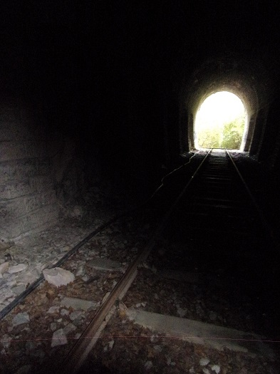

.jpg)


La gare
Carte postale ancienne montrant un portique et un cabanon associés à la gare
Remarque : la gare pouvait être appelée aussi "du Rébenty" vu son éloignement du village
La gare de St Martin Lys a la particularité... de ne pas être à St Martin Lys. Elle est bien sur la commune mais pas au village. Il faut parcourir Plus d'un Kilomètre (presque 2) pour atteindre la première maison en prenant tunnel(s) et route de planèses, Plus encore en prenant la route départementale.
Pourquoi cet éloignement ?
Certains vous diront que pour la construire plus près, il fallait faire traverser le village par la voie ferrée (Combien de maisons détruites ?). D'autres que le terrain autour de l'Aude était trop instable et donc qu'il fallait trouver un terrain plus adéquat. De plus la placer à cet endroit, avait l'avantage de raccourcir le chemin pour les habitants de la vallée du Rébenty et du plateau de Sault.
Certaines mauvaises langues, elles, argumenteront que le maire à l'époque était l'heureux propriétaire de l'auberge et de la scierie du Rébenty... En effet, difficile de trouver un meilleur emplacement pour cette gare que juste en face de l'auberge...
A savoir que cette auberge est encore en activité, alors que l'auberge en ruine que mon arrière-grand-père a rénovée, pour la transformer en bergerie, a beaucoup souffert du déplacement, au même moment, de la route de Quirbajou. En effet le chemin reliant Quirbajou à St Martin arrivait en ligne droite sur la maison familiale, alors que la route faite au moment de la construction du chemin de fer débouche sur la départementale à l'embouchure du Rébenty, au plus près de la gare (et de la scierie du moulin du Rébenty...).
Les négociations sur le tracé de la voie ferrée et sur l'emplacement de la gare ont dû être difficiles (voir "Tunnel de Pierre Lys" page 18 - 19 ), mais le village a préservé sa tranquillité et y a gagné un nouveau pont sur l'Aude (celui en face de la gare, menant à la départementale)

Le pont de la gare (vu depuis la gare)
Même si, comme ma grand-mère, les jeunes martinlysois qui allaient travailler à la ville, soir et matin, y perdaient presque une heure (et pestaient de rentrer si tard avec leur fardeau pour se mettre à leurs petites tâches payées à la pièce).
Cet emplacement initialement contestable, s'est révélé une chance : son éloignement des habitations a permis d'installer une usine bruyante sans perturber la vie du village : l'usine de broyage et d’ensachage de la dolomie extraite des carrières de Roquefeuil, puis de Ste Colombe sur Guette, et cela dès le début des années 60. L'usine profitait de la ligne ferroviaire jusqu'à Rivesaltes et plus loin si nécessaire.

"L'ancienne ligne Saint-Martin-Lys - Axat - Perpignan fait l'objet d'une remise en l'état"
Article du Midi-libre du 12 décembre 1960 (Photo Midi-libre) - transmis à Jean-Pierre Lescure par - transmis à Jean-Pierre Lescure par Sylvain Delagarde
La suite de l'article est à la page "anciennes industries de St Martin Lys")

Photo de l'usine des Blancs Minerais de Paris accolée à l'ancienne gare (photo retrouvée par Paul à la mairie de St Martin)


L'usine des Blancs Minerais de Paris devenue YMERIS
avec un des trains permettant de transporter le produit retraité jusqu'à Rivesaltes
L'épuisement de la carrière de Ste Colombe a entraîné la fin de l'usine en 2017, malgré les efforts pour trouver un emplacement de substitution (voir "DEMANDE D’AUTORISATION D’OUVERTURE D’UNE CARRIERE DE DOLOMIE SUR LE TERRITOIRE DE LA COMMUNE DE SALVEZINES".)
Les liens suivants montrent la remise en l'état de la gare suite au démontage (démantèlement) de l'usine de Dolomie en 2017.
Gare de St-Martin-Lys: c'est videLa gare de St Martin sert maintenant (depuis 2002) de point d'arrêt aux trains touristiques, du Train du Pays Cathare et du Fenouillèdes (TPCF) qui a aménagé un nouveau quai à la gare de St Martin en juin 2018. Il est maintenant possible de demander par téléphone à prendre le train à la gare de St Martin plutôt qu'à celle d'Axat.
Voir pour la ligne St Martin-Lys-Rivesaltes par le train touristique quelques jolies photos de la gare dont certaines d'avant le démantèlement de l'usine.
Information donnée par Jean-Pierre Lescure : "Le site de la gare serait propice à développer des activités complémentaires, car sa situation, implantée entre les deux tunnels et le fait qu'il faut traverser l'Aude pour s'y rendre, sans être éloigné de la route présente de nombreux avantages. Espérons que les élus sauront en saisir l'intérêt. Une information qui devrait se concrétiser à Pâques 2021, une activité de vélos rail en complément des trains.
Départ d'Axat pour St Martin puis ou retour vers le Campérié. Cette nouvelle activité devrait toucher une nouvelle clientèle présente en Haute Vallée de l'Aude..."
Voir en annexe un historique du TPCF proposé par Jean-Pierre Lescure

La gare
Vue depuis le chemin de Planèses
Sur cette Photo, même si on aperçoit encore des trains de marchandise, l'usine était déjà démenbrée. Lorsque l'usine était en fonctionnement, depuis ce point on pouvait entendre le bruit de fond du concassage de la dolomie. Une poussière blanche s'élevait de l'usine et le paysage était légèrement blanchi, lorsqu'il n'avait pas plu depuis quelques jours.

La gare désaffectée, héberge encore des wagons hors d'usage
Vue depuis le chemin du col de Gage

l'arrêt de bus en face de la gare (pour venir prendre le train touristique ? )
Une source se trouve juste au dessus de la gare. Cette source est suffisamment importante pour avoir été envisagée comme pouvant venir en complément de celle alimentant la citerne du village de Saint Martin. Aussi un tuyau à vue a été déroulé de la gare jusqu'au village par le chemin de Planèses.
La source de la gare, canalisée dès la construction de la gare. Pour un usage directement dans les locaux, pour les machines ?
La gare vue depuis la source
Tunnel des oliviers, le tuyau d'alimentation d'eau traversant à vue tout le tunnel
La gare est entourée de 2 tunnels (des Oliviers (ou Oulious) vers St Martin, du Bourrec vers Axat) qui sont immédiatement suivis de 2 ponts traversant l'Aude (Rebuzo vers St Martin, Bourrec vers Axat)
"Toutefois il est toujours bon de rappeler qu'il est interdit de pénétrer sur les voies, dans les gares et encore plus sur les ouvrages d'art. Si on s'arrête à la seule exploitation du train touristique, les rappels à l'ordre sont continus et les intrusions dans les tunnels pour vandaliser les matériels et dans les gares pour taguer les autorails, coûtent beaucoup d'argent à TPCF. Il faut le dire et le répéter, car tout le monde en pâti. Ne prenez rien de mal, mais c'est aussi important de le dire, que de faire de la publicité pour le train touristique." (Jean-Pierre Lescure)
Photos proposées sur le Facebook de Thierry Meynier


Cartes proposées sur les pages faceboock de Thierry Meynier et de la gare de Saint Martin Lys
Voir aussi